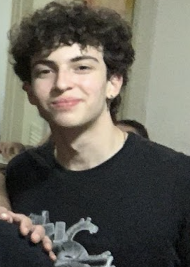

front-end dev

Olá, meu nome é Vinicius Moço Quintian, tenho 17 anos e sou um desenvolvedor front-end junior. O começo da minha jornada como estudante de tal área se deu por pura cuiosidade, com o tempo se tornando uma diversão e por fim um sonho. Busco uma oportunidade de trabalho como jovem aprendiz que me possibilite por em prática tudo e mais um pouco do que eu aprendi nos cursos da plataforma Alura